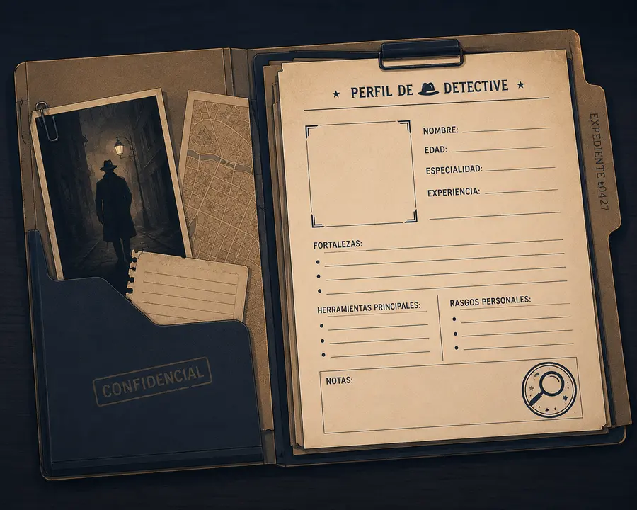

Misión de Reclutamiento
Objetivo de esta pantalla: activar tus saberes previos sobre los héroes y heroínas actuales, y comenzar tu "perfil de detective" reflexionando sobre qué cualidades los definen.
Jefe/a de Agencia: "Antes de salir a investigar el pasado, necesitamos conocer tu intuición de detective. Completa tu expediente inicial."

Actividad 3 - Desafío Rápido de Campo
Nombra tres héroes o heroínas de películas, libros o series que admires y escribe una cualidad fundamental de cada uno.